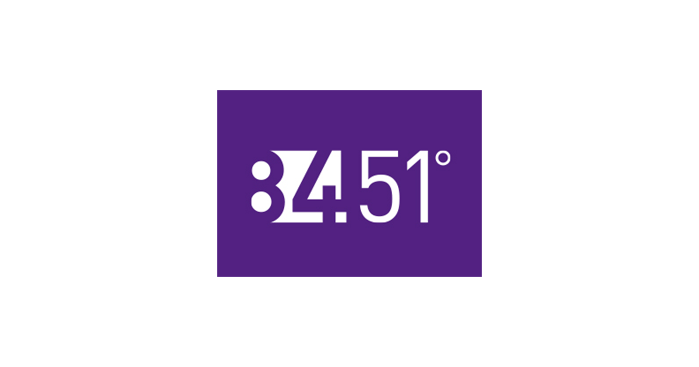

About Me |
Tess is a fourth year Computer Science Student at McGill University. She is completing her BA in Computer Science with a minor in Communication Studies and a supplementary minor in Computer Science. Tess chose to minor in communication studies to learn about communication technologies and their impact on culture throughout history as well as to learn how to think critically about the technologies that surround us. Tess will be working as a Data Engineer at 84.51° in Chicago beginning in June 2024. |
|
|
McGill University 2020-2024 BA Computer Science Supplementary Minor in Computer Science Minor in Communication Studies Java, Python, C++, C, HTML, CSS, JavaScript, SQL, PySpark Leadership, Costumer Service, Team work, Communication |
||
EXPERIENCE |

Engineer |
Data Engineer Intern |
Software Engineer Intern |
|
VP Community |
Barista & Social Media Manager |
Product Management Intern |
JULY 2021
Java, Android Studio, JSON
Inspired by my dad, this app uses indoor and outdoor temperatures and humidities to calculate
whether you should turn on the air conditioning and close the windows, or turn off the air
conditioning and open the windows. For this project I created a simple user interface using
Android Studio and programmed all the calculations necessary. In order to get the correct
response I converted a spreadsheet of water densities into a JSON file and used a
JSONObjectREquest and a URL to access the data. Although the calculations were simple,
learning how to read and navigate large JSON files from a URL made this an exciting and
challenging project! See on
Github.
June 2021
HTML, CSS, JavaScript, React
First website I ever made to learn HTML, CSS, JS and React. No longer updated.
tessgompper.netlify.app.
Fall 2023
HTML, CSS, JavaScript
tgompper1.github.io
See on
Github.
Dec-Nov 2023
MERN Stack (MongoDB, Express, React, Node.js), HTML, Javascript, CSS
Created an updated and revamped website for the McGill Physiology Undergraduate League of Students
Council for the COMP307: Web Development end of term group project. The site features login functionality
with seperate public and administrator views and capabilities. Admin can log in and create/delete/edit events
and blog posts.
See here
puls.netlify.app.
|
On Fundamental Change in Re-Recordings "...Although both active pop singers, Cabello and Stromae boast vastly different styles and hail from very different regions. We may wonder how the two ended up working together but the crossover is not as spontaneous and random as we may assume...." Click to read more! |
Not All Critics are Creators "...Weaver Beats’ shift from music critic to creator has presented us with an opportunity to ask whether the ability to qualify music as good or bad gives you the ability to create good music of your own..." Click to read more! |
Notion AI: Redefining the Ideal User "With just the click of a button, users can delegate “anything” to the AI, perfectly embodying North America’s work-based culture." Click to read more! |
|
Libby, OverDrive, and the Physical Library "...I will be considering the public library as residual compared to Libby’s emerging status to analyze Libby’s meaningless conformities that could be bypassed by its digital format..." Click to read more! |
The Intersection of Twitter and the Pro-Oil Movement "...The key motivator for interacting with misinformative posts, or posts in general, is the desire to strengthen one’s position within a group of like-minded people..." Click to read more! |
Lake Louise and Tourism Infrastructure (Not Pictured) "In analyzing the relationship between destination, the sublime, infrastructure, and circulating representations, we can see the effect this relationship has on tourists and the tourist experience at Lake Louise..." Click to read more! |
|
Roosevelt, the Radio, and Fireside Chats "...Roosevelt took a personal and comforting approach to inform his citizens as well as to make them feel confident in his leadership and personally close to him in a time when leaders had been distancing themselves from the public..." Click to read more! |
America, How do You Suck? "Although the company received much praise on social media for their many celebrity cameos, it didn’t take long for a specific demographic of viewers to criticize the commercial’s catchphrase..." Click to read more! |
Sabra Hummus Super Bowl Commercial and the Labour that Went into it "By including 19 cameos in their ad, Sabra gained access to and indirectly employed the vast fanbase behind each celebrity to bolster circulation and create a widespread dialogue on social media" Click to read more! |